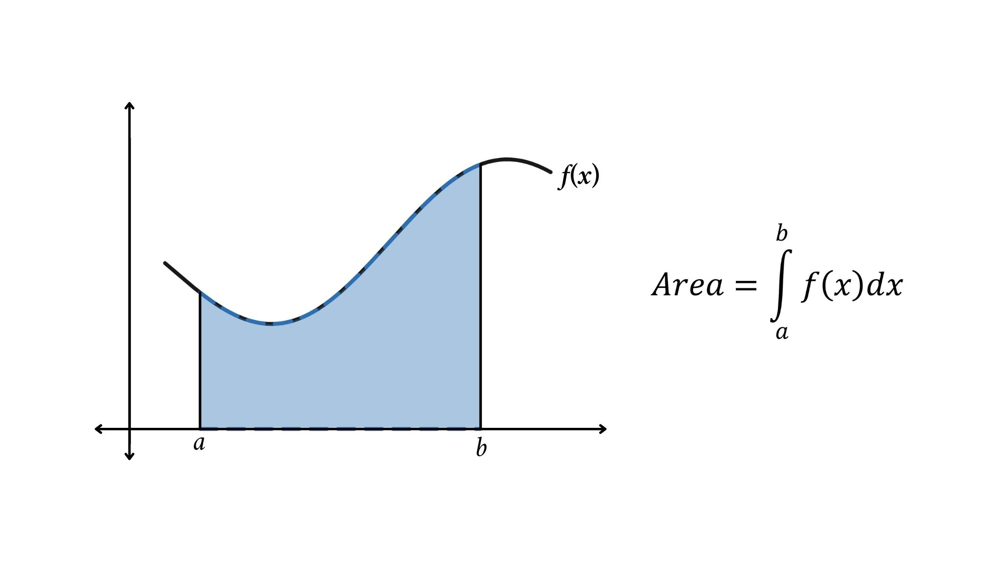

Related Coursework

Introduction to Object-Oriented Programming
In this course, I was taught Java. Through multiple assignments and projects, I was able to master the language. I created a unit conversion program, random number generator, a "Guess the Number" game, and more. Elements of Java that I learned about include: arrays, arraylists, loops (for, while, do-while), hashmaps, treemaps, packages, interfaces, polymorphism, abstract classes, and more.
Introduction to C Programming and Unix
In this course, I learned C, and was taught about general programming basics. I was taught about different types of hardware and software. In this course, I used control statements (if, switch), variables, operators, strings, bits, bytes, and more basics.
Discrete Mathematics
In this course, I learned about abstract mathematics. I learned how think about mathematics like a computer does (with algorithms, variables, and patterns). I learned about sets, elements, subsets, unions, intersections, complements, relations, cartesian products, functions, truth tables, induction, pigeonhole principle, and more.
Calculus 2
In this course, I learned to think about mathematics in a theoretical sense. I had to imagine how things that had not happened yet would happen (predict trends). I also learned new ways to envision objects around me (spheres as discs). In this course, I mainly manipulated derivates and integrals.
Introductory Physics
In this course, I learned about vectors, spaces, rules and laws of physics, formulas, and new ways to think about how physics affects all people everyday. Using logic, I could figure out what forces acted on what objects and then use this information, as well as infomration about angles, to calculate unknown information.
Composition 2
In this course, my writing skills were strengthened through a 9-page research essay. I wrote an essay comparing the differences between gasoline, electric, and hybrid vehicles, citing evidence and using logic to support my claims. I was told my essay was too technical, but being overly technical can be good in the field of computer science.